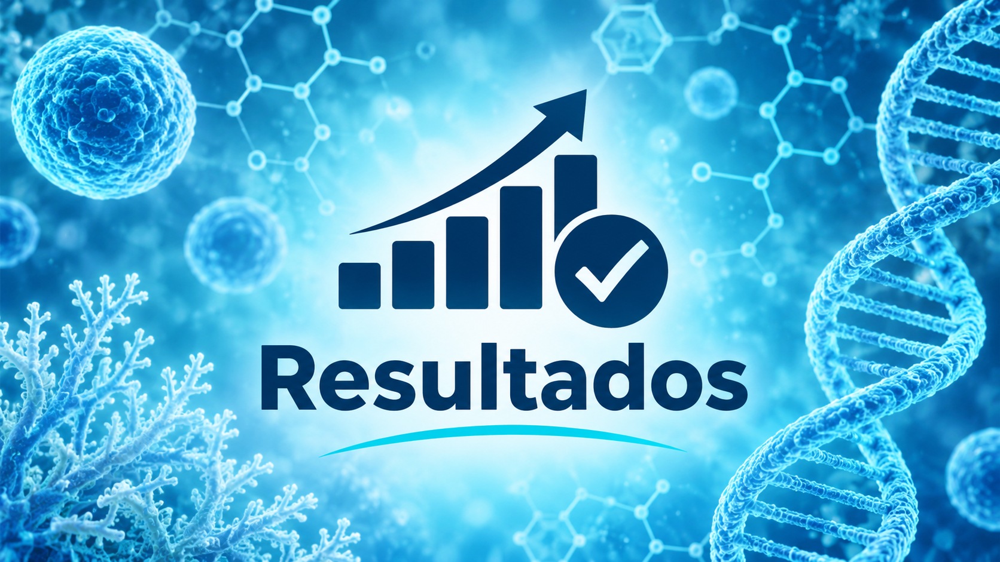

Resultados del proyecto
Después del trabajo de laboratorio y del procesamiento bioinformático, llegamos a la fase de revisión e interpretación de los datos. En este apartado se presentan los resultados obtenidos y las conclusiones que podemos extraer del estudio de las muestras de coral.

Del procesamiento al análisis
A lo largo del proyecto se prepararon y procesaron datos de secuenciación para poder estudiar las muestras. Las etapas de control de calidad, filtrado y análisis bioinformático permitieron organizar la información y dejarla preparada para su interpretación.
En esta sección: se pueden incorporar los resultados concretos de los análisis, acompañados de tablas, gráficos o imágenes generadas durante la investigación.
Resultados principales
Resultados del análisis: [Añadir aquí los principales resultados obtenidos en el análisis bioinformático.]
Comparación de muestras: [Indicar qué diferencias o similitudes se observaron entre las muestras estudiadas, si las hubo.]
Datos destacados: [Incluir cifras, microorganismos identificados, gráficos o tablas que puedan compartirse.]
Conclusiones y próximos pasos
El proyecto permitió recorrer distintas fases de una investigación bioinformática: desde la preparación de las muestras y el tratamiento de los datos hasta su análisis. Además de los resultados científicos, el trabajo sirvió para adquirir experiencia en herramientas de biología molecular, gestión de datos y resolución de problemas técnicos.
[Completar con las conclusiones específicas que se puedan justificar a partir de los resultados.]